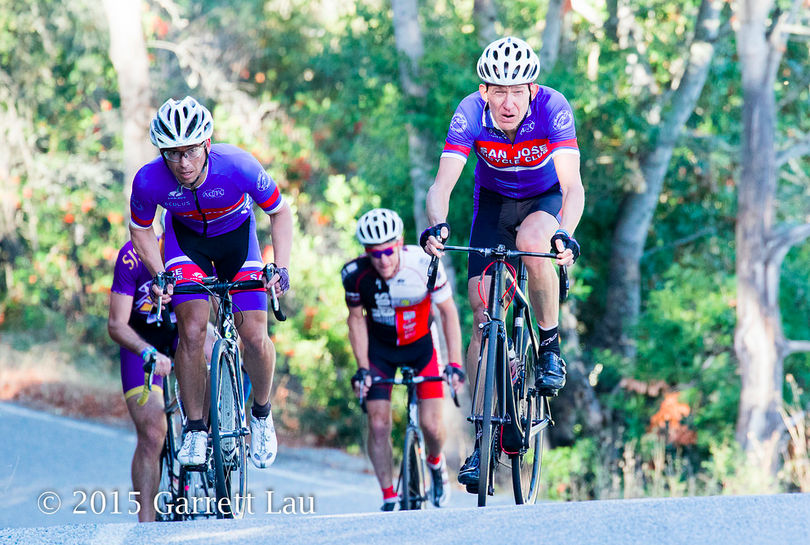

Low-Key Hillclimbs Aggregate Results:
Bohlman
generated Fri Nov 4 10:34:14 PDT 2016
|
|  |
| 2015 week 6: Alexander Komlik leads a group to the 1st On Orbit intersection. (Garrett Lau) |
Results are listed here from the Low-Key archives, sorted by time for each climb. Some years start and/or finish time differ slightly, such as
with Kings Mt Road where after 1995 the start moved from Entrance Way to Greer.
Results are ranked by time first, score second.
Score is calculated using a simple percent-of-median-speed
formula, with time adjustments for division. These scores will generally differ from those calculated in the results for that particular year, since
the scoring scheme has evolved. Tandems are split between 1998, when they were counted as single participants, and other years, when the individual
riders have been counted separately
Results for Men
| rank | time | score | rider | cat | team | year | week | code |
|---|
| 1 | 25:29 | 125.605 | Andrew Shimizu | 1 | Data Driven Athlete | 2015 | 6 | |
| 1 | 25:29 | 125.605 | Bill Laddish | 45's | Team CVC | 2015 | 6 | |
| 3 | 25:30 | 125.523 | Alistair Hardy-Poirier | Displaced Xc Skier | out fer a rip | 2015 | 6 | |
| 4 | 25:39 | 124.789 | David Collet | 45+ | Stanford & Sons | 2015 | 6 | |
| 5 | 25:54 | 123.584 | Zachary Ulissi | 2 | Stanford & Sons | 2015 | 6 | |
| 6 | 26:04 | 122.794 | Chris Evans | 35+ | Stanford & Sons | 2015 | 6 | |
| 7 | 26:33 | 120.559 | Carl Nielson | 55+ | Sr's & Mr's of No Mercy | 2015 | 6 | |
| 8 | 26:59 | 118.623 | Blaise Hamel | 3 | Camels | 2015 | 6 | |
| 9 | 27:09 | 117.894 | Stefano Profumo | 35+ | Squadra SF | 2015 | 6 | P |
| 10 | 27:14 | 117.534 | Morgan Raines | 40+ | Bike Trip/Symantec | 2015 | 6 | |
| 11 | 27:21 | 117.032 | Rob Nast | 50+ | Plus 3 | 2015 | 6 | |
| 12 | 27:22 | 116.961 | Scott Gammon | 6 | Legendary | 2015 | 6 | |
| 13 | 27:30 | 116.394 | Daniel Connelly | 3 | Low-Key | 2015 | 6 | |
| 14 | 27:41 | 115.623 | Shahram Moatazedi | 40+ | LGBRC | 2015 | 6 | |
| 15 | 28:04 | 114.044 | Robert Easley | 45+ | Sr's & Mr's of No Mercy | 2015 | 6 | |
| 16 | 28:09 | 113.706 | Travis Retzer | 3 | Data Driven Athlete | 2015 | 6 | |
| 17 | 28:35 | 111.983 | Stephen Lamm | 40+ | Google | 2015 | 6 | |
| 18 | 28:40 | 111.657 | Brian Schuster | 2 | Squadra SF | 2015 | 6 | |
| 19 | 28:45 | 111.333 | Andy Crews | 45+ | Diablo | 2015 | 6 | |
| 20 | 28:58 | 110.501 | Joe Fant | 55+ | LGBRC | 2015 | 6 | |
| 21 | 29:02 | 110.247 | Paul Castonguay | 45+ | Low-Key | 2015 | 6 | |
| 22 | 29:26 | 108.749 | Parker Gara | Junior | SunPower Racing | 2015 | 6 | |
| 23 | 29:34 | 108.258 | Klaus Fleischmann | 45+ | Pen Velo/Pomodoro | 2015 | 6 | |
| 24 | 29:43 | 107.712 | Rich Hill | 50+ | LGBRC | 2015 | 6 | |
| 25 | 29:47 | 107.471 | Larbi Benhabib | 30+ | | 2015 | 6 | M |
| 26 | 30:09 | 106.164 | Stuart Taylor | 40+ | Tandem Team Taylor | 2015 | 6 | |
| 27 | 30:10 | 106.105 | Jim Perreira | 45+ | San Jose Bike Club | 2015 | 6 | |
| 28 | 30:44 | 104.149 | Joseph Junio | Havefun | SOLO | 2015 | 6 | |
| 29 | 30:51 | 103.755 | Doug MacPherson | 40+ | Pen Velo/Pomodoro | 2015 | 6 | |
| 30 | 31:04 | 103.031 | Alexander Komlik | 50+ | San Jose Bike Club | 2015 | 6 | |
| 31 | 31:07 | 102.866 | Cesar Gullien | 40+ | Evergreen | 2015 | 6 | |
| 32 | 31:14 | 102.481 | Yu Kon | 45+ | LGBRC | 2015 | 6 | |
| 33 | 31:38 | 101.185 | Chris Mickelsen | 55+ | Pen Velo/Pomodoro | 2015 | 6 | |
| 34 | 31:42 | 100.973 | Scott Krahn | 30+ | LGBRC | 2015 | 6 | |
| 35 | 32:19 | 99.046 | Andy Sutterfield | 25+ | San Jose State University | 2015 | 6 | |
| 36 | 32:20 | 98.995 | Matt Wocasek | 50+ | Team Spokesman | 2015 | 6 | |
| 36 | 32:20 | 98.995 | Doug Reynolds | 60+ | NightRiders | 2015 | 6 | |
| 38 | 32:39 | 98.035 | Will Von Kaenel | 55+ | LGBRC | 2015 | 6 | |
| 38 | 32:39 | 98.035 | Steve Johnson | 50+ | LGBRC | 2015 | 6 | |
| 40 | 32:56 | 97.191 | Bruno Acklin | 55+ | Clagnuts | 2015 | 6 | |
| 40 | 32:56 | 97.191 | Val Minaev | 35+ | LGBRC | 2015 | 6 | |
| 42 | 32:58 | 97.093 | Hal Rooney | 55+ Cat 3/Master | LGBRC | 2015 | 6 | |
| 43 | 33:00 | 96.995 | Andrew Fitzhugh | 50+ | Stanford cycling | 2015 | 6 | |
| 44 | 33:13 | 96.362 | Jonathan Dixon | 35+ | Google | 2015 | 6 | |
| 44 | 33:13 | 96.362 | Jeremy Scott | 45+ | LGBRC | 2015 | 6 | |
| 46 | 33:32 | 95.452 | Scott Martin | 55+ | Team Spokesman | 2015 | 6 | |
| 47 | 33:45 | 94.840 | Frank Paysen | 55+ | Chain Reaction | 2015 | 6 | |
| 48 | 33:51 | 94.559 | Hui Chen | 45+ | Team Cycling Panda | 2015 | 6 | |
| 49 | 34:06 | 93.866 | Marek Dutkiewicz | 50+ | Diablo | 2015 | 6 | |
| 50 | 34:10 | 93.683 | Jim Williams | 65+ | San Jose Bike Club | 2015 | 6 | |
| 51 | 34:29 | 92.823 | Kirk Scheibelhut | Runner With A Bike | Sparklemotion | 2015 | 6 | M |
| 52 | 34:30 | 92.778 | Amir Safavi | 25+ | Google | 2015 | 6 | |
| 53 | 34:31 | 92.733 | Scott Byer | 45+ | Google | 2015 | 6 | |
| 54 | 34:48 | 91.978 | Christoph Erben | 45+ | LGBRC | 2015 | 6 | |
| 55 | 34:58 | 91.540 | Liam Sherlock | Junior | IdentityMind | 2015 | 6 | |
| 56 | 35:03 | 91.322 | Thomas Preisler | 60+ | LGBRC | 2015 | 6 | |
| 57 | 35:08 | 91.105 | Martin Wegenstein | 65+ | LGBRC | 2015 | 6 | |
| 58 | 35:30 | 90.164 | Tim Irvine | 40+ | LGBRC | 2015 | 6 | |
| 59 | 35:32 | 90.080 | Tony Amadio | 30+ | Clagnuts | 2015 | 6 | |
| 60 | 35:49 | 89.367 | Thomas Hutchings | 35+ | Team Lindsay B Development Team | 2015 | 6 | |
| 61 | 35:53 | 89.201 | Nigel Allen | 40+ | Oso | 2015 | 6 | |
| 62 | 36:06 | 88.666 | Russell McCrary | 55+ | Sr's & Mr's of No Mercy | 2015 | 6 | |
| 63 | 36:22 | 88.016 | Han Wen | 45+ | Grumpy Old Men (GOM) | 2015 | 6 | |
| 64 | 36:39 | 87.335 | Larry Klein | 55+ | Grumpy Old Men (GOM) | 2015 | 6 | |
| 65 | 37:20 | 85.737 | Nicholas Brummell | 50+ And Broken | Atlas | 2015 | 6 | |
| 66 | 37:29 | 85.394 | Brian Ward | 40+ | Low-Key | 2015 | 6 | |
| 67 | 37:35 | 85.166 | Carl Werner | 50+ | LGBRC | 2015 | 6 | |
| 68 | 37:37 | 85.091 | Bernard Bell | 55+ | PBCC | 2015 | 6 | |
| 69 | 38:34 | 82.995 | Dan Pankratz | 40+ | LGBRC | 2015 | 6 | |
| 70 | 38:39 | 82.816 | Ryan Powell | 35+ | Team Joe Karbowski | 2015 | 6 | |
| 71 | 38:53 | 82.319 | Frank Drobot | 65+ | Team Djament | 2015 | 6 | |
| 72 | 38:56 | 82.213 | Rupesh Kapoor | Slightly Old | Google | 2015 | 6 | M |
| 73 | 40:20 | 79.360 | Adam Tow | 40+ | Grumpy Old Men (GOM) | 2015 | 6 | |
| 74 | 43:08 | 74.208 | David Salazar | 25+ | Stanford cycling | 2015 | 6 | |
| 75 | 45:15 | 70.737 | Ed Miller | 75+ | SLACer | 2015 | 6 | |
| 76 | 46:05 | 69.458 | Gregory P. Smith | Finisher | Low-Key | 2015 | 6 | |
M : mishap
P : undefined
Results for Women
| rank | time | score | rider | cat | team | year | week | code |
|---|
| 1 | 30:26 | 126.870 | Amy Cameron | 35+ | Sr's & Mr's of No Mercy | 2015 | 6 | |
| 2 | 31:53 | 121.100 | Janet Martinez/Gardner | 45+ | Sr's & Mr's of No Mercy | 2015 | 6 | |
| 3 | 32:46 | 117.836 | Jennie Phillips | 50+ | Sr's & Mr's of No Mercy | 2015 | 6 | |
| 4 | 33:03 | 116.825 | Sindy Cho | Just Make It To The Top | Low-Key | 2015 | 6 | |
| 5 | 33:14 | 116.181 | Shaena Berlin | 2 | MIT-West | 2015 | 6 | |
| 6 | 33:57 | 113.728 | Elizabeth Hamel | 3 | Camels | 2015 | 6 | |
| 7 | 34:52 | 110.738 | Christina Davis | 4 | LGBRC | 2015 | 6 | |
| 8 | 35:52 | 107.651 | Jill Stone | 4 | LGBRC | 2015 | 6 | |
| 9 | 36:23 | 106.122 | Lindsay Barlow | 4 | Team Lindsay B Development Team | 2015 | 6 | |
| 10 | 39:06 | 98.749 | Emma Dixon | 35+ | Google | 2015 | 6 | |
| 11 | 41:13 | 93.678 | Mel Dutkiewicz | 50+ | Diablo | 2015 | 6 | |